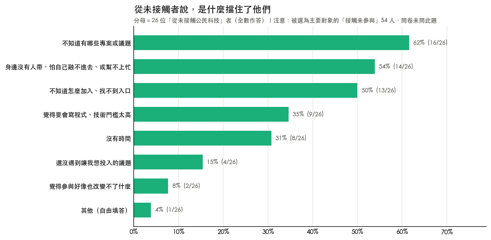
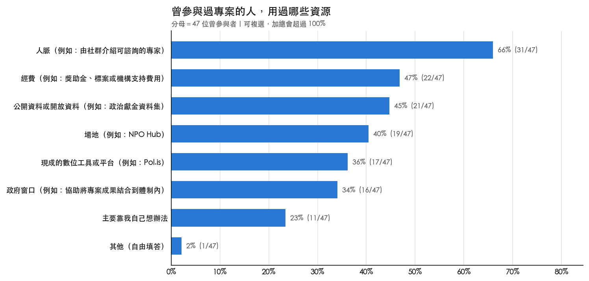
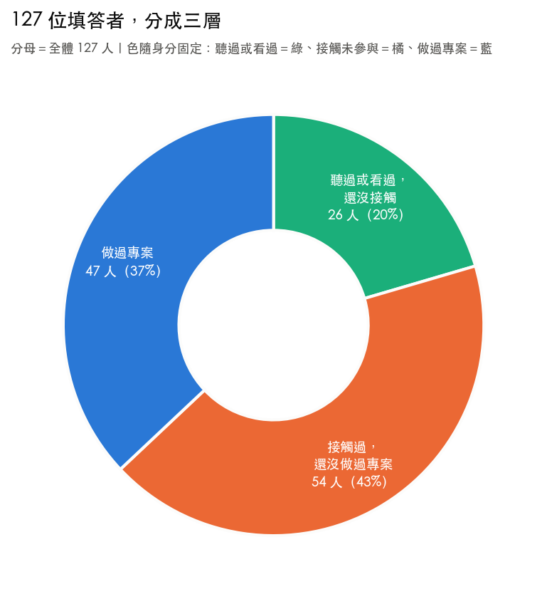
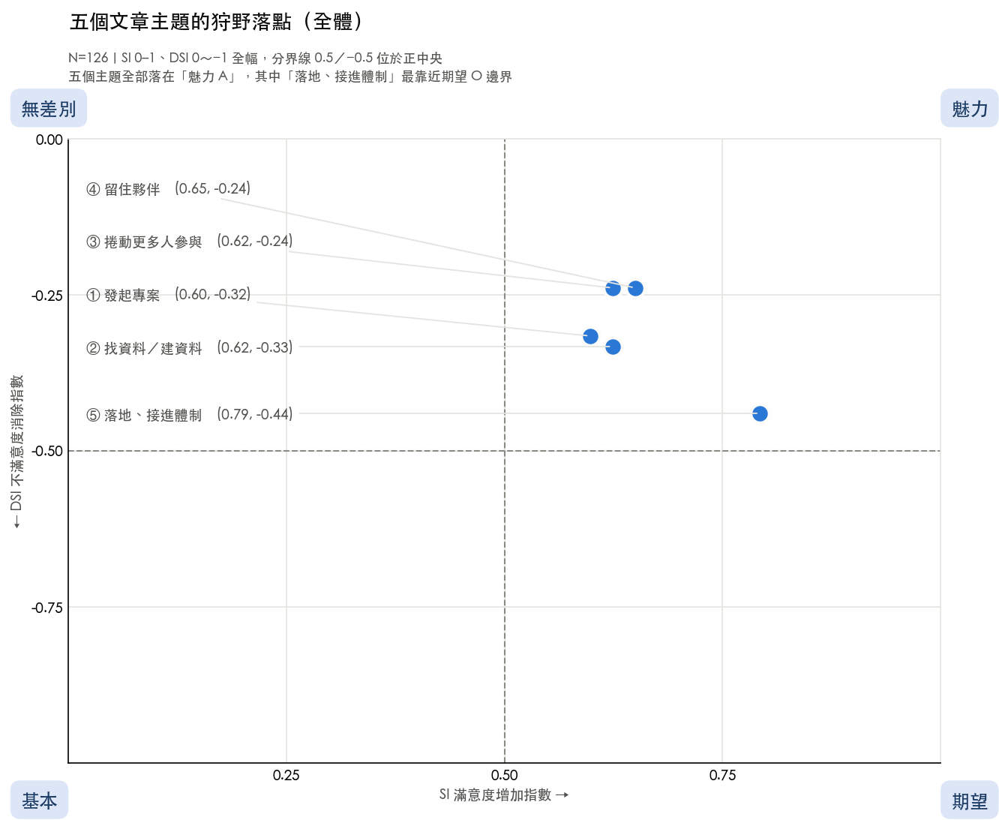

從 127 份社群問卷、11 篇實作指引，到開源人機協同寫作流程
▲ 上推：定錨全場共識（沉穩開場，語調誠懇放緩）
各位數位發展部的長官、現場 g0v 專案展攤的夥伴，以及維基百科社群的朋友們，大家好，我是獨立研究者 Claire。
今天非常高興能以錄影方式與大家相聚。現場既有熱血實作的公民科技成果，也有講求知識沉澱的維基共筆。這兩個社群雖然形式不同，但骨子裡都有著完全相同的精神：那就是開放、協作與經驗傳承。
▼ 下切：預告三項實質交付（節奏明快、清晰分明）
在接下來的時間裡，我想跟大家分享我們完成的三件事：第一，透過 127 份問卷摸清生態系真實痛點；第二，提煉出 11 篇體制銜接指南；第三，打造一套人機協作寫作工具。
從看見公共問題的不滿，到由下而上主動打造開源待用原型
參與光譜從單一技術擴展至公共治理，但志工流動帶來知識沉澱挑戰
從生態實證、策略選題、體制落地，到開源公共財資產傳承
▲ 上推：大格局全景定錨（語調沉穩自信、視野開闊）
在我們深入具體的數據與案例之前，我想先為大家攤開這張全景地圖。傳承不能只靠口耳相傳，它必須是一套有科學依據、能持續運轉的實踐系統。
▼ 下切：四部曲節奏預告（節奏明快、字字分明）
今天由四大篇章推進：第一部用問卷打破刻板迷思；第二部用產品管理方法展開策略選題；第三部直面熱血專案的停擺危機，盤點四條實踐路徑；第四部分享人機協同寫作流程，把成果化為人人可接棒的公共財。
官方活動公告覆蓋 65%，但知悉消息並不等於知道如何動手參與

▲ 上推：打破刻板印象（語調明亮、引起好奇）
很多人總以為，一般人之所以不敢走進公民科技，是因為不會寫程式、技術門檻太高。但在 26 位受訪者身上，數據告訴我們完全不是這樣。
▼ 下切：微觀數據直擊（字字清楚、節奏緊湊）
技術門檻只排在第四位，僅佔 35%。真正卡死新人的前三大障礙，全部是資訊與社會資本：62% 不知道有什麼專案可以參與；54% 怕自己格格不入；50% 找不到參與入口。更耐人尋味的是，有 65% 的人至少透過一個官方管道接收消息。
▲ 上推：定錨結構性洞察
這證明了一件事：大家看得到活動新聞，不等於知道怎麼動手。阻礙不是技術能力不足，而是生態系的認知介面發生了斷層。
社群本質是自發同好聚會而非外包廠商，志工熱情需要的是搬開行政石頭

▲ 上推：公私協同的本質反思（誠懇向體制長官對話）
過去很多公部門推動公民科技，習慣辦黑客松、發放比賽獎金，但往往比賽一結束專案也就結束了。為什麼？
▶ 平移：同樂會與代工廠的心智模型
因為社群本質上是個自發同樂會，大家是為了自我實現而來，它不是簽約代工廠。人員自由流動是自然常態，一筆獎金本來就買不斷長期的業餘時間。
▼ 下切：問卷實證與真正需求
調查顯示，實作者最常使用的資源第一名是人脈（66%），經費是 47%。最消耗熱情的往往是資料被鎖在 PDF 裡、找不到窗口對話。
▲ 上推：體制價值最大化
政府最能展現的誠意，不是單向發獎金，而是主動釋出乾淨的開放資料、建立公務諮詢窗口，幫民間搬開路上的行政石頭。
資料庫收錄 226 個專案，但行動指引僅有 11 篇；不憑空猜測，先做調研再精準動筆
▶ 平移：繁星與藏寶圖比喻（生動引導）
了解了生態系的真實樣貌後，我們進入第二部：策略選題。
當我接手主持這項指引撰寫計畫時，揪松團已經累積了一個寶庫：civictech.tw 資料庫目前收錄了 226 個台灣公民科技專案，但配套的行動指引只有 11 篇。但這就像滿天繁星，專案非常多，大家抬頭看覺得很美，卻不知道哪一顆跟自己有關。
▼ 下切：直面規劃初期的三個提問（層層推進）
面對這個龐大的資料庫，指引該從哪裡開始寫，我立刻問了自己三個問題：第一，誰會來看這些指引？是社群裡的所有人嗎？第二，不同背景的人，碰到的困難是一樣的嗎？第三，如果我們資源有限，這批指引要對準誰，才能發揮最大的帶動效益？
▲ 上推：科學方法論的堅持（展現研究嚴謹度）
我們決定：不憑空猜測，也不關起門來自己寫。第一步，先向社群發出問卷，把生態系的輪廓看清楚了，再動筆。
開源社群並非鐵板一塊，不同圈層面臨著截然不同的參與關卡與痛點

▲ 上推：打破均質想像（語調從宏觀切入）
回收的 127 份問卷給了我們最關鍵的洞見：開源社群絕對不是鐵板一塊，不同層級的需求存在著巨大的斷裂。
▼ 下切：三圈層微觀剖析（依序掃描三群體）
最外層是 26 位好奇者，卡在資訊不足；最內層是 47 位在坑底的實作者，面臨進度停滯與成員累垮。但最引人注目的，是處在中間的 54 個人。他們持續關注議題、會去看相關成果，就在坑邊觀望，只差臨門一腳！
▲ 上推：策略鎖定的關鍵抉擇
這批指引不求討好所有人，而是聚焦鎖定這 54 位中間層，給他們跳坑最需要的實作方法。
五大主題滿意係數達 0.60～0.79 全數落在魅力型，成果配置定案為「3 長文 ＋ 8 指南」

▲ 上推：導入產品分析框架（沉穩、理性專業）
確認了目標對象，那到底要寫什麼題目？我們引進了產品管理常用的狩野模型，用量化數據來做選題決策。
▼ 下切：數據深度解讀（節奏明快、數字鏗鏘有力）
分析結果非常有趣：五個候選主題全部落在魅力型，滿意係數高達 0.60 到 0.79。這代表指南不是維生必需品，沒有人會因為少了一篇文章抗議，但一旦產出，能帶來明顯的加分價值！
當我們交叉比對三圈層，數據更印證了分群策略：成果落地銜接體制，全體達到 0.79，三群也都把它排在第一；團隊營運這題，圈外人只有 0.48 毫無興趣，但老手高達 0.71；而如何發起專案這題，老手只有 0.51，但坑邊中間層高達 0.69！
▲ 上推：最終定案結構（總結交付格局）
數據提供了方向，再經過揪松團討論拍板，最終確定 3 篇方法論長文專門破解深層卡關，搭配 8 篇領域指南盤點必備工具，把資源精準砸在刀口上。
民間端與體制端各司其職、相互補位，告別單向抱怨與資源錯置
▲ 上推：建構制度化的公私協作全景（格局宏大、對齊長官與社群共識）
當專案選擇與體制對接時，雙方到底該如何互動，才不會變成民間抱怨體制僵化、體制抱怨民間不負責任？答案就在依循專案生命週期，建立清晰的互補分工。
▼ 下切：三階段微觀職責對位（三階段層次分明）
前期探索，民間扮演低風險創新沙盒，體制釋放乾淨開放資料；中期對接，民間拿出可檢驗的原型，體制指派專責窗口協助解讀法規；後期落地，民間開源交付，體制將方案納入常規公共服務。
▲ 上推：民主治理的雙向奔赴
各司其職、相互補位，這才是成熟民主社會裡，公私協同最理想的樣貌。